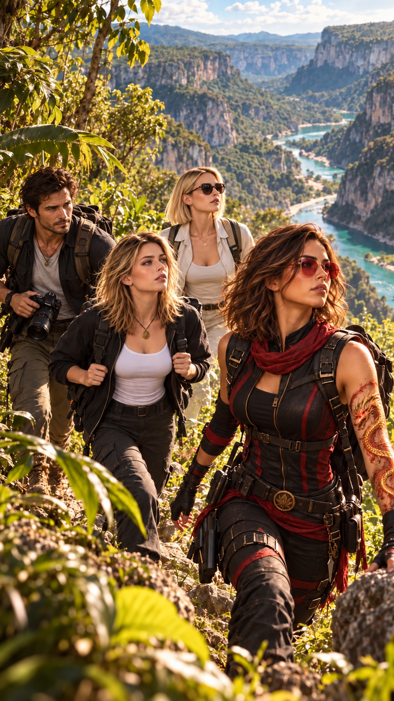
Hope, Max, Anna et Betty ont décidé de s’offrir quelques jours loin des événements récents.
Enfin, « s’offrir quelques jours » était surtout la manière dont Hope avait présenté les choses.
Pour Anna, ce séjour représentait autre chose.
L’occasion de passer du temps avec Max Speedman.
Son modèle.
Son futur mentor, peut-être.
Et surtout, l’occasion de parler journalisme avec lui sans avoir autour d’eux Peter, Lucy, Root, Clive et la moitié du Mexique pour interrompre leur conversation.
Après de longues heures de route, ils atteignent la région de la Huasteca Potosina.
Ils passent la nuit près du village d’El Naranjito.
Le lendemain, très tôt, ils partent à travers une végétation dense et luxuriante.
La chaleur commence déjà à se faire sentir.
Tout autour d’eux, la forêt semble vivante.
Oiseaux multicolores.
Insectes.
Feuilles gigantesques.
Bruits d’eau au loin.
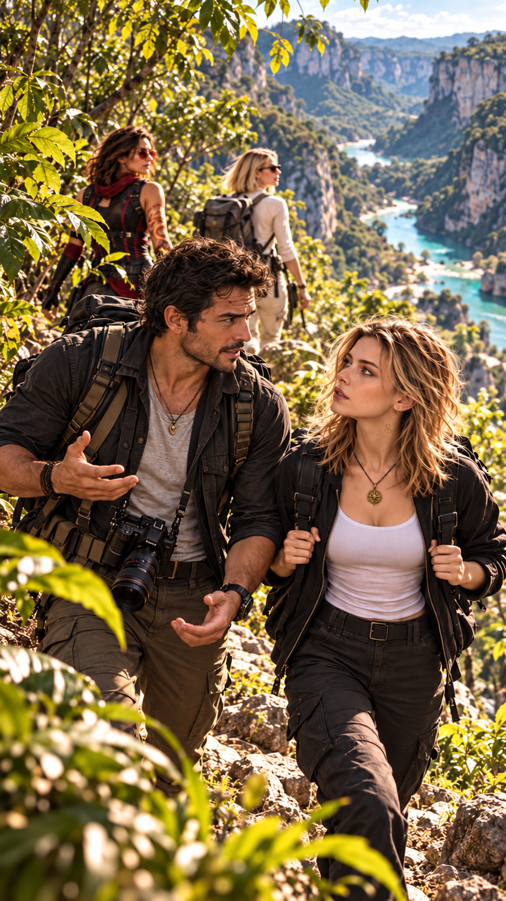
Max marche aux côtés d’Anna.
— Alors, future grande reporter, première question.
Anna sourit.
— Je t’écoute.
— Pourquoi le journalisme ?
Anna réfléchit.
— Parce que j’aime comprendre.
— Mauvaise réponse.
Elle le regarde.
— Pourquoi ?
— Tout le monde aime comprendre.
Il poursuit :
— La vraie question, c’est : qu’est-ce que tu es prête à faire lorsque ce que tu découvres ne te plaît pas ?
Anna ralentit légèrement.
Max sourit.
— Là, on commence à parler journalisme.
Quelques mètres devant eux, Betty lève les yeux au ciel.
— Tu pourrais lui laisser au moins vingt-quatre heures avant de commencer à lui retourner le cerveau.
— Impossible.
Max regarde Anna.
— Elle a choisi le pire métier du monde.
— J’ai entendu !
Hope sourit sans se retourner.
— Il a raison.
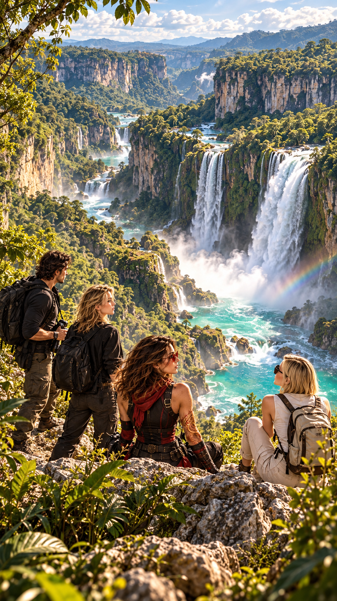
La randonnée les conduit progressivement au-dessus du canyon.
Au loin, le Río Gallinas plonge dans le vide et rejoint le Río Santa María.
Les chutes de Tamul apparaissent enfin.
Une immense masse d’eau turquoise se précipite du haut de la falaise.
Par endroits, la brume forme un léger arc-en-ciel.
Anna reste sans voix.
— Waouh…
Max sourit.
— Enfin une réaction journalistiquement exploitable.
— Tais-toi.
Plus loin, le fleuve poursuit sa course au fond du canyon.
Des oiseaux traversent le vide.
La forêt semble s’étendre à l’infini.
Betty observe le paysage.
— Je comprends pourquoi tu voulais venir ici.
Hope ne répond pas immédiatement.
Elle regarde l’eau.
— Il y a des endroits qui remettent les choses à leur place.
Ils poursuivent encore un moment avant de rejoindre un secteur plus calme.
Plusieurs vasques naturelles.
Une petite grotte remplie d’eau claire.
Anna regarde Max.
— On se baigne ?
— J’attendais que quelqu’un propose.
Betty rit.
Mais Hope s’est arrêtée.
Son regard vient de changer.
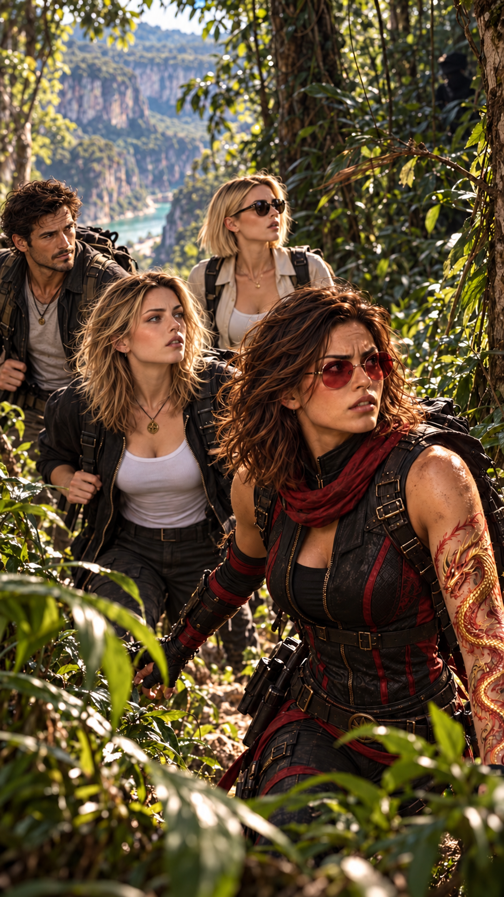
Quelque chose ne va pas.
Elle ne sait pas immédiatement quoi.
Le bruit des oiseaux s’est modifié.
Un mouvement trop régulier dans les feuillages.
Une branche revenue trop lentement en place.
Puis ce silence infime que seuls ceux qui passent leur vie à observer finissent par remarquer.
Hope tourne légèrement la tête.
Quelqu’un les suit.
Elle ne voit personne.
Mais elle sait.
Son corps l’a compris avant son esprit.
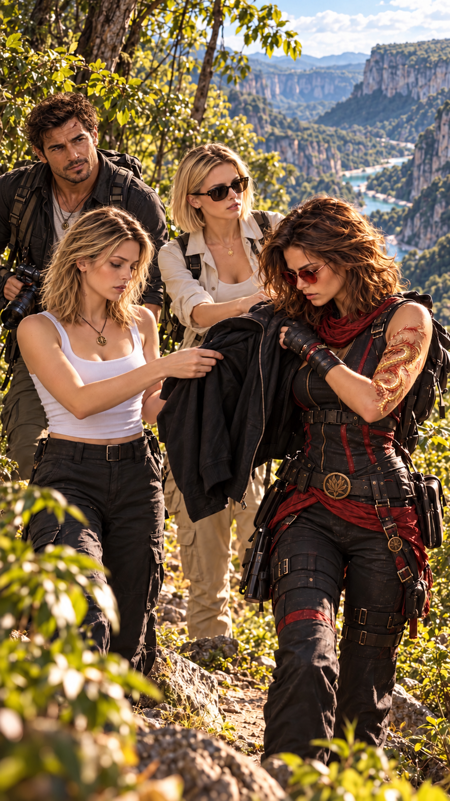
— Max.
Il reconnaît immédiatement le ton.
— Oui ?
Hope retire son sac à dos et le lui tend.
— Prends ça.
Max ne pose aucune question.
Betty les regarde.
— Qu’est-ce qui se passe ?
Hope fixe la forêt.
— Nous ne sommes plus seuls.
Hope regarde Anna.
— Tu pars avec lui.
— Pourquoi ?
— Parce que je te le demande.
— Hope…
— Anna.
Sa voix suffit.
Hope prend la veste d’Anna.
— Donne-moi ça.
Anna la lui tend.
Hope regarde Betty.
— Donne-lui la tienne.
Betty comprend.
Max comprend immédiatement.
— Vous voulez inverser les silhouettes.
Hope acquiesce.
— De loin, oui.
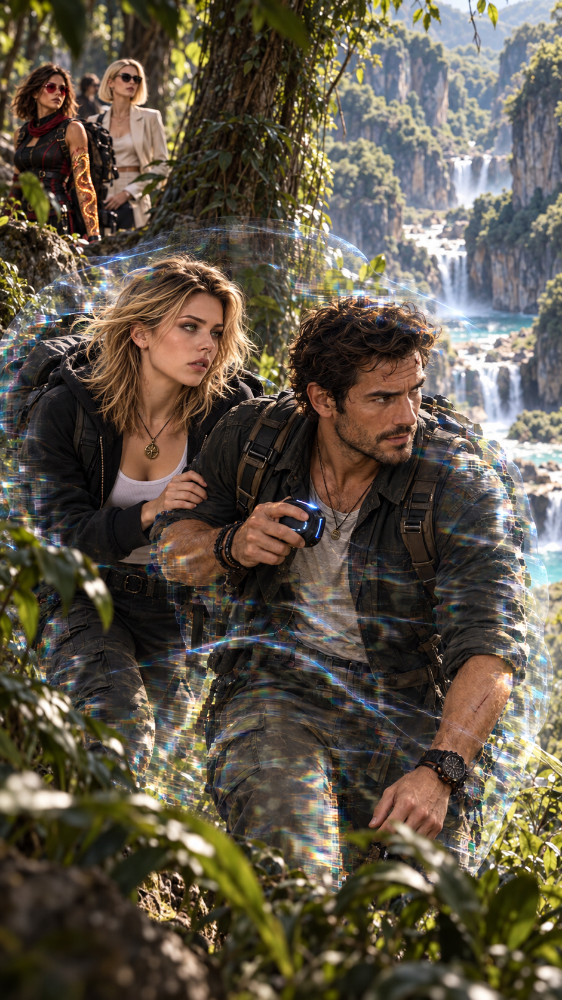
Max active plusieurs dispositifs conçus par Peter.
Une fine membrane lumineuse se déploie autour d’Anna et de Max.
Puis disparaît presque immédiatement.
Leurs silhouettes commencent à se confondre avec l’environnement.
Pas de véritable invisibilité.
Mais un camouflage optique suffisamment sophistiqué pour tromper un regard humain à distance.
Un second système se met en fonctionnement.
Protection balistique partielle.
Réduction de la signature thermique.
Brouillage de plusieurs systèmes de détection.
Peter appelle ça :
un bouclier frais.
Max attrape doucement Anna par le bras.
— On y va.
Anna regarde Hope.
— Sois prudente.
Hope lui sourit.
— Toujours.
Anna disparaît progressivement avec Max entre les arbres.
Hope attend quelques secondes.
Puis elle se tourne vers Betty.
— Maintenant, nous allons faire croire qu’elle est encore avec moi.
Betty la regarde.
— Et moi ?
— Tu vas jouer le rôle de Max.
— Très flatteur.
Hope sourit.
— Tu as la bonne veste.
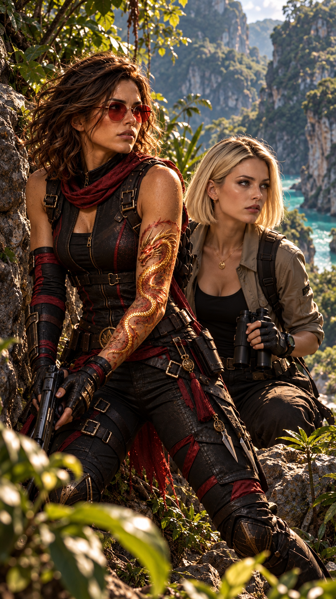
Elles reprennent leur marche.
Hope connaît suffisamment son adversaire pour savoir comment elle raisonne.
Si Amy les suit réellement, elle supposera qu’Hope ne laissera jamais Anna partir sans elle.
C’est exactement ce qu’Hope veut qu’elle pense.
Elles progressent encore plusieurs kilomètres.
Puis Hope ralentit.
— Nous les avons suffisamment éloignés.
Betty tourne la tête.
— « Les » ?
Hope ne répond pas.
Elle regarde autour d’elle.
— Nous avons quelques minutes.
— Quelques minutes avant quoi ?
Hope inspire profondément.
— Avant que mon passé nous rattrape.
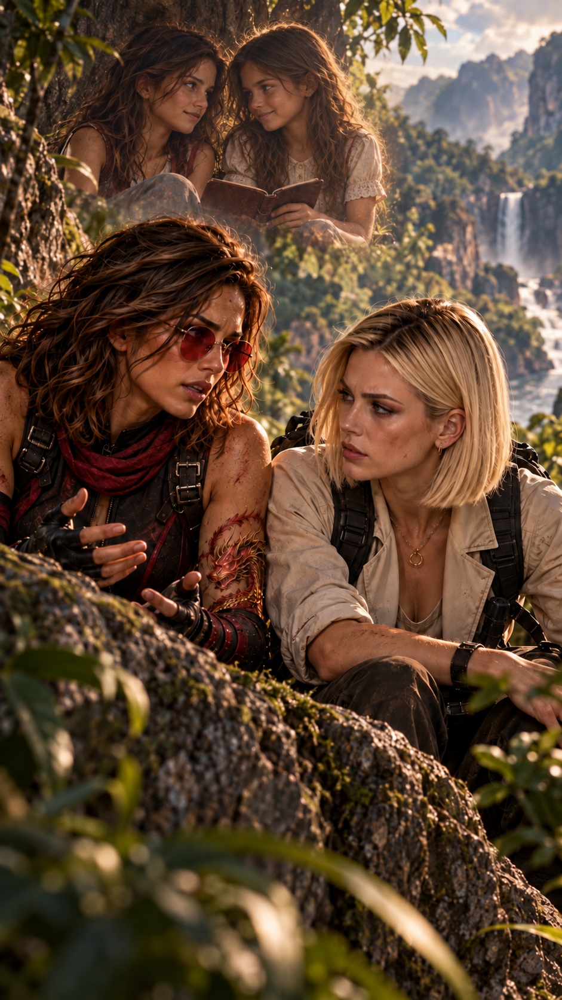
Elles s’abritent derrière un relief rocheux.
Hope écoute quelques secondes.
Puis elle commence.
— Elle s’appelle Amy.
Betty ne dit rien.
— Elle avait douze ans lorsque je l’ai rencontrée.
Hope regarde la forêt.
— Le même âge que moi.
Hope hésite.
— Lorsque l’A380 s’est écrasé, il n’a pas seulement détruit ma vie.
Betty comprend.
— Son village ?
Hope acquiesce.
— Une partie de sa communauté a été frappée par le crash.
— Elle aussi a tout perdu.
— Oui.
Hope reste silencieuse.
— Moi, j’ai été recueillie par ceux qui allaient devenir ma famille.
— Les Sentinelles.
— Oui.
— Et Amy ?
— Par les Gardiens Noirs.
— Deux gamines.
— Deux survivantes.
— Deux mondes complètement opposés.
Hope sourit légèrement.
— Ça ne nous a pas empêchées de nous retrouver.
Betty fronce les sourcils.
— Vous étiez amies ?
— En secret.
Hope laisse échapper un petit rire.
— Très secrètement.
— Pourquoi ?
— Parce que c’était strictement interdit.
Hope poursuit :
— Nous nous retrouvions pour jouer.
— Parler.
— Nous raconter ce qu’on apprenait.
— Nous faisions parfois des kilomètres simplement pour passer une heure ensemble.
Betty regarde Hope avec étonnement.
— Et personne ne savait ?
— Ils ont fini par savoir.
Son sourire disparaît.
— Et nous avons été punies.
— Toutes les deux.
— De plus en plus sévèrement.
Hope baisse les yeux.
— Alors nous avons commencé à nous voir moins souvent.
Puis plus du tout.
— Vous ne vous êtes jamais revues ?
Hope hésite.
— Pas vraiment.
Elle relève les yeux.
— Mais nous avons toujours gardé un œil l’une sur l’autre.
— Sans parler.
— Sans nous rencontrer.
— Sans jamais réellement nous perdre.
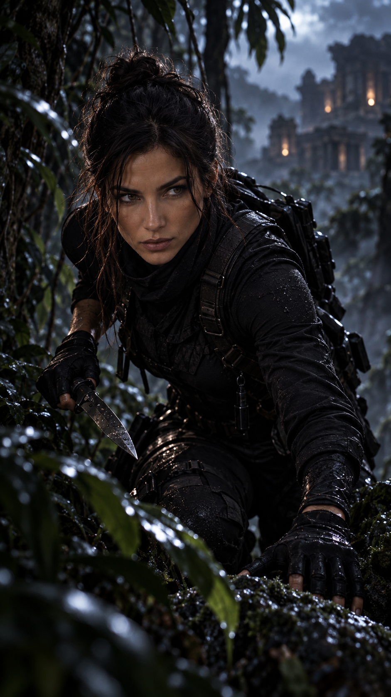
Betty comprend que quelque chose de bien plus profond les relie.
— Qu’est-elle devenue ?
Hope répond simplement :
Le Fantôme de l’Ombre.
Betty fronce les sourcils.
— C’est-à-dire ?
— L’un des recours les plus dangereux des Gardiens Noirs.
— Une professionnelle.
— Une traqueuse.
— Une tueuse.
Betty pâlit.
Hope poursuit :
— Si elle est ici pour Anna, la situation vient de devenir beaucoup plus grave.
— Et tu la connais suffisamment pour la battre ?
Hope ne répond pas immédiatement.
— Je la connais suffisamment pour savoir que je ne veux pas l’affronter.
Betty la regarde.
— Pourquoi ?
— Parce qu’elle aussi me connaît.
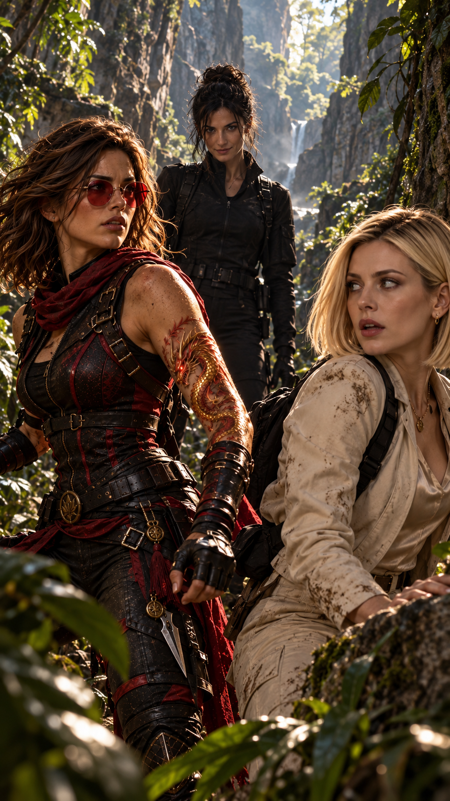
Une voix résonne derrière elles.
— Toujours autant de mal à parler de moi quand je suis là ?
Hope ferme les yeux.
Puis se retourne.
Amy se tient quelques mètres plus loin.
Calme.
Immobile.
Un léger sourire aux lèvres.
— Bonjour, Hope.
Betty se raidit.
Amy regarde sa veste.
Puis celle d’Hope.
Son sourire s’élargit.
— Magnifique.
— Tu m’as réellement trompée.
Hope ne répond pas.
Amy poursuit :
— Je dois reconnaître que peu de gens peuvent se vanter d’avoir réussi cet exploit.
Elle regarde autour d’elle.
— La petite n’est plus là.
Betty déglutit.
Amy reporte son attention sur Hope.
— Tu l’as éloignée.
— Oui.
— Avec Max, j’imagine.
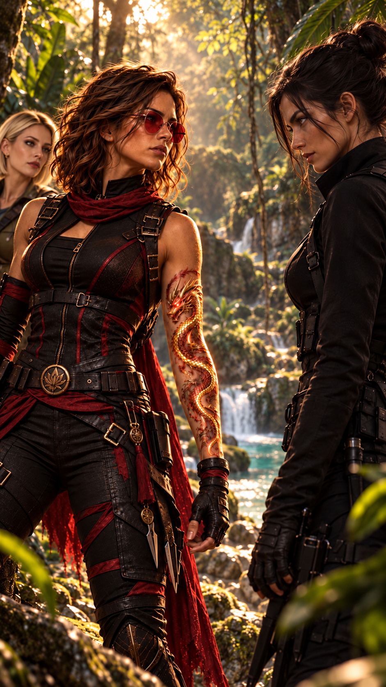
Amy sourit.
— Ce n’est pas grave.
— C’est le jeu.
Puis son visage devient plus froid.
— Mais je déteste modifier mes plans.
Hope répond :
— C’est ton problème.
La dernière fois qu’elles s’étaient réellement vues…
NE CHANGE JAMAIS.
Amy avance de quelques pas.
— On m’avait demandé de l’observer.
Hope fronce légèrement les sourcils.
— Anna ?
— Oui.
— Et ?
Amy sourit.
— J’ai vu suffisamment.
Hope comprend.
— Tu es venue la tuer.
Amy incline légèrement la tête.
— C’était l’idée.
Hope relève immédiatement cette nuance.
— C’était ?
Amy sourit davantage.
— Je trouve ça terriblement dommage.
— Une fille pareille…
Elle secoue doucement la tête.
— Quel gâchis.
Hope reste silencieuse.
— Je préférerais la convaincre.
Betty intervient :
— De quoi ?
Amy la regarde pour la première fois réellement.
— Vous devez être Betty.
Elle sourit.
— La maman.
Hope se place légèrement devant elle.
Amy rit doucement.
— Voilà.
— C’est exactement ça.
Hope ne bouge pas.
— Quoi ?
Amy la regarde.
— Tu sais ce qui a changé chez toi ?
— Éclaire-moi.
Amy désigne Betty du regard.
— Avant, pour te vaincre, il fallait t’atteindre.
— Maintenant, ce n’est plus nécessaire.
Hope comprend immédiatement.
Elle attrape Betty par l’avant-bras et la place derrière elle.
Amy éclate de rire.
— Tu comprends vite.
— Il faut simplement t’expliquer longtemps.
Hope la fixe.
— Tu n’as pas changé.
Le sourire d’Amy disparaît presque complètement.
Hope poursuit :
— La dernière fois que nous nous sommes vues, tu m’as dit trois mots.
Amy serre légèrement la mâchoire.
Ne change jamais.
Silence.
Le regard d’Amy se durcit.
— Je savais qu’un jour ces trois mots nous conduiraient ici.
— Alors tu savais aussi que je ne te suivrais jamais.
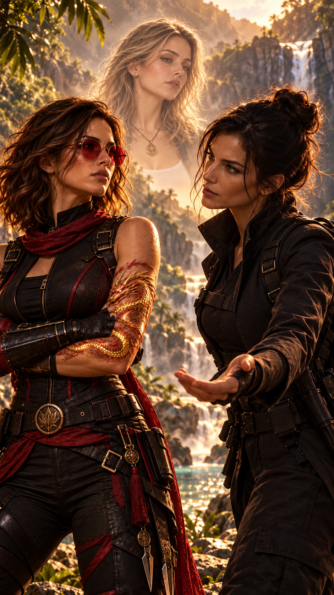
Amy avance.
— Tu pourrais encore.
Hope rit.
— Qu’est-ce que tu as pris ?
Amy ne sourit plus.
— Toi.
— Moi.
— Anna.
Elle regarde Betty.
— Peut-être même elle.
Hope secoue la tête.
— Tu rêves.
— Non.
Amy répond calmement :
— J’imagine simplement ce que nous pourrions devenir ensemble.
— Nous trois.
— Personne ne pourrait nous arrêter.
Hope hausse les épaules.
— Tu viens de perdre tout sens des réalités.
Amy sourit.
— Alors il ne me reste qu’une autre solution.
— Laquelle ?
— Te tuer.
Puis elle regarde Betty.
— Et puisque sa mère est ici…
Hope change immédiatement d’expression.
— Laisse-la en dehors de ça.
Amy sourit.
— Voilà ton problème. Tu as désormais trop de choses à perdre.
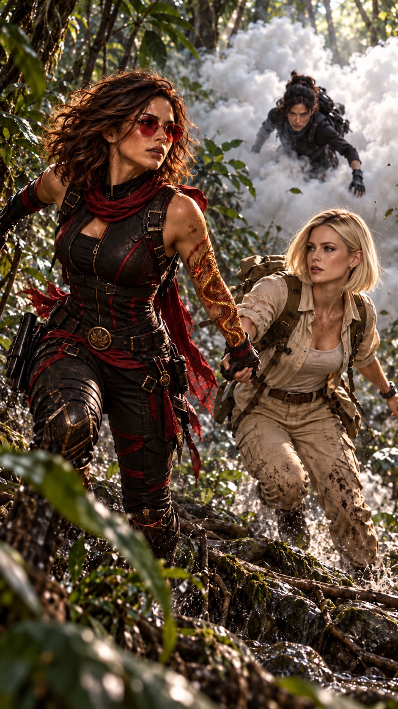
Hope glisse discrètement une main dans sa poche.
Amy le remarque.
— Je te connais trop bien.
— Pas suffisamment.
NUAGE DÉPLOYÉ
Visibilité réduite.
Quelques secondes d’avance.
COURS.
Hope laisse tomber une petite bille au sol.
Un nuage blanc explose autour d’elles.
— COURS !
Hope attrape Betty.
Elles disparaissent dans la végétation.
Amy se lance immédiatement à leur poursuite.
La course dure plusieurs minutes.
Branches.
Racines.
Rochers humides.
Hope adapte constamment leur trajectoire.
Betty lutte pour suivre.
— Hope !
— Continue !
— Où est-ce qu’on va ?
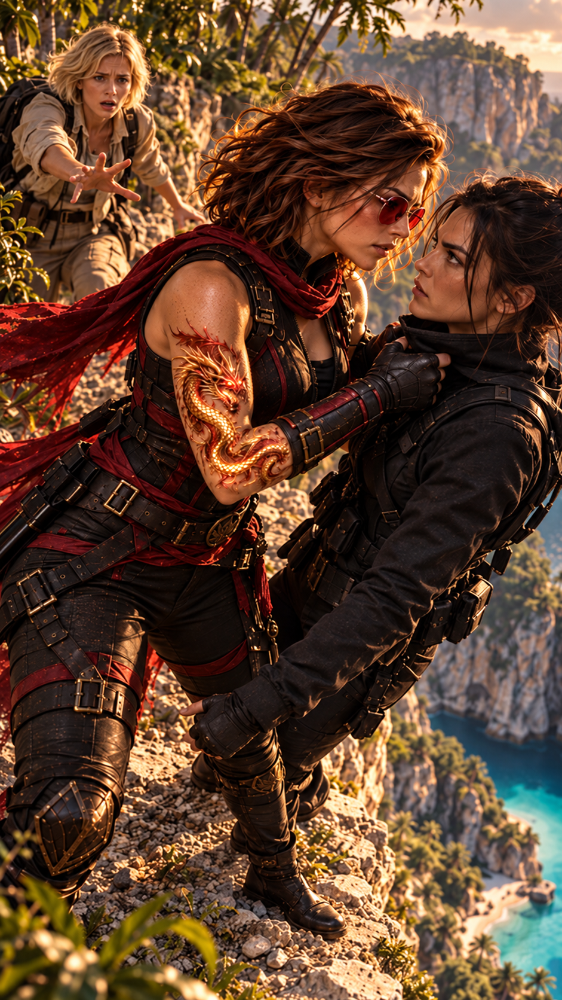
Hope regarde devant elle.
Puis s’arrête brusquement.
Betty manque de la percuter.
Devant elles :
le vide.
Une falaise secondaire domine un bassin profond du canyon.
Hope sait qu’Anna devra un jour comprendre sa véritable nature.
Elle demande à Betty de ne pas empêcher cette évolution.
« Elle est bien plus que ta fille. »
Betty pâlit.
— Dis-moi que tu avais prévu ça.
Hope regarde derrière elles.
— Pas exactement.
Amy apparaît quelques secondes plus tard.
Elle ralentit.
Puis sourit.
— Tu as perdu ton sens de l’orientation ?
Hope ne répond pas.
Amy s’approche.
— C’est terminé.
Hope se tourne vers Betty.
— Écoute-moi.
— Non.
— Betty.
— Ne prends pas ce ton-là.
Hope lui saisit les épaules.
— Prends soin d’Anna.
Betty secoue immédiatement la tête.
— Non.
— Root la guidera.
— Max la protégera.
— Hale restera près d’elle.
— Et toi aussi.
Hope la regarde profondément.
— Elle est bien plus que ta fille.
Betty se fige.
— Qu’est-ce que tu veux dire ?
— Tu le sais déjà.
— Accepte-le.
— Et lorsqu’elle sera prête, laisse-la devenir ce qu’elle doit devenir.
Betty comprend soudain.
— Hope, ne fais rien de stupide.
Hope lui sourit.
Un sourire calme.
Presque rassurant.
— Ça va aller.
Puis elle se retourne.
Amy est désormais tout près.
— Touchant, dit-elle.
Hope la regarde.
— Tu veux jouer ?
Amy sourit.
— Depuis toujours.
Hope se jette sur elle.
Amy n’a pas le temps de comprendre.
Hope l’agrippe.
Et toutes les deux basculent dans le vide.
— HOPE !
Betty se précipite au bord de la falaise.
Elle voit les deux femmes disparaître.
Puis l’eau.
Puis plus rien.
— NOOOOOON !
Sa voix se perd dans le canyon.